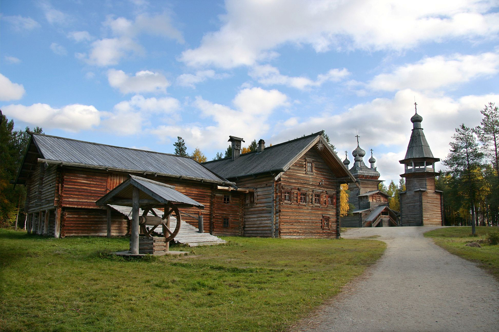
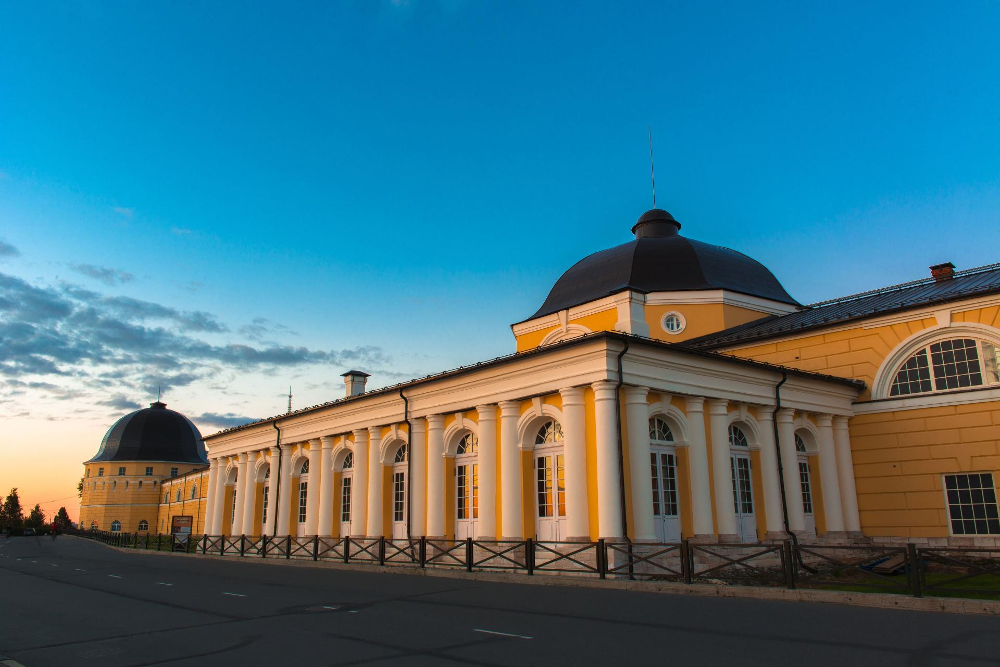
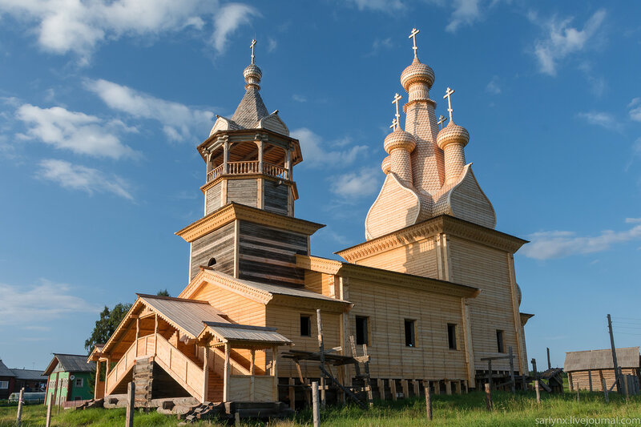
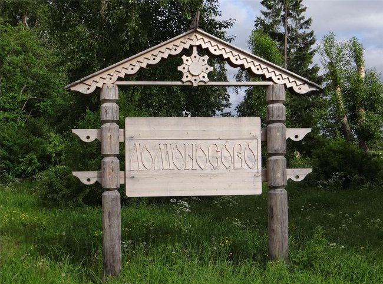

Приморский округ · 1 деньДеревянное зодчество и набережная Двины
Утро в музее-заповеднике «Малые Корелы», обед рядом с музеем, возвращение в Архангельск: Северный морской музей, пр. Чумбарова-Лучинского и ужин у Двины.
Выберите готовый маршрут по одному из округов Архангельской области, настройте музеи и кафе под свой бюджет и откройте единый трек в Яндекс Картах.
Каждый маршрут составлен в пределах одного города или округа — без нелогичных переездов на сотни километров за один обед

Приморский округ · 1 деньУтро в музее-заповеднике «Малые Корелы», обед рядом с музеем, возвращение в Архангельск: Северный морской музей, пр. Чумбарова-Лучинского и ужин у Двины.

г. Архангельск · Пеший деньАрхангельские Гостиные дворы, Музей художественного освоения Арктики им. А.А. Борисова, заповедная Чумбаровка, сувенирные лавки и набережная.
 Каргопольский округ · 1 день
Каргопольский округ · 1 день
Соборная площадь и Каргопольский музей, обед в самом Каргополе, центр ремёсел «Берегиня», выезд в старинное село Ошевенское и ужин в Каргополе.
 Плесецкий округ · ЮНЕСКО
Плесецкий округ · ЮНЕСКО
Визит-центр парка, Никольская часовня XVIII века, музей «В начале было Слово», обед в трактире «Поча», экотропа «Трансэкотропа» и закат у Кенозера.

Мезенский округ · Красивая деревняШатровая Одигитриевская церковь (1709 г.), самые северные мельницы-столбовки, музей «Политов дом», традиционный поморский обед в Кимже и выезд в Мезень.

Холмогорский округ · 75 кмПереправа на Куростров в с. Ломоносово, историко-мемориальный музей М.В. Ломоносова, фабрика художественной резьбы по кости и Спасо-Преображенский собор в Холмогорах.
Укажите направление, бюджет на питание и интересы — система автоматически настроит список музеев и заменит рестораны на кафе/столовые при экономном бюджете.
Реалистичный тайминг с учётом времени осмотра и дороги. Нажмите на название места для перехода на официальный сайт.